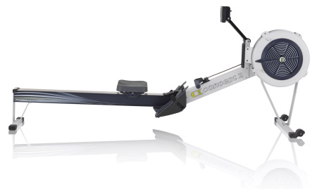

Cada Modelo D inclui um PM5, o monitor de desempenho mais evoluído, dando-lhe dados precisos e comparáveis para cada remada. O braço de monitor ajustável permite posicionar o monitor onde você preferir.
Nossos remoergômetros respondem ao seu esforço a cada remada, então você está no controle total do seu esforço e resistência em todos os momentos. A entrada de ar em espiral permite facilmente ajustar o fluxo de ar para o flywheel, assim você pode mudar a sensação da remada de acordo com sua preferência. O design do flywheel minimiza o ruído e maximiza a sensação de suavidade.
Com a sua altura de (35,6 cm) no assento, o Modelo D mantém um perfil baixo.

O modelo D apresenta um mecanismo de liberação rápida (sem necessidade de ferramentas!), assim você pode facilmente separar a máquina em duas partes para armazenamento. Rodas no pé da frente permitem rolar a máquina totalmente montada para posição escolhida.
Usamos fincapés ajustáveis em nossos ergômetros para dimensionamento rápido e fácil. (Os fincapés acomodam uma ampla gama de tamanhos de sapato.) Nosso punho confortável é ergonômico porque apresenta uma curva de 10 graus que lhe permite remar com uma posição natural do braço e da mão.
Corrente niquelada: é bonita e trabalha duro. O níquel permite períodos maiores entre lubrificação, por isso, mesmo que a manutenção não é o seu forte, o Modelo D ainda vai sentir suave e sedoso durante o próximo treino.
O trilho de alumínio recebe como capa uma faixa de aço inoxidável para garantir um movimento suave do assento.
Nossas máquinas são bem conhecidas por sua durabilidade e construção. Resistente e construída para durar, as nossas máquinas suportam o uso rigoroso em clubes de remo, centros de treinamento, salas de estar, hotéis, academias de ginástica e as bases militares ao redor do mundo. Temos certeza de nossas máquinas são fáceis de cuidar para que você possa se concentrar no uso do seu investimento, e não em preservá-la.
Nós incluímos os seguintes itens com a compra do modelo D com o PM5:
Manual do usuário
Ferramentas e instruções ilustradas para montagem
O slide Concept2 (vendido separadamente) proporciona a sensação de remar sob a água ao remar no Modelo D e permite que você conecte múltiplos Modelo Cs, Ds e/ou Es para treinamento da equipe.
O Modelo D está coberto pela nossa garantia limitada de cinco anos da estrutura e garantia de dois anos do monitor de performance e partes móveis. Veja todos os detalhes da garantia.